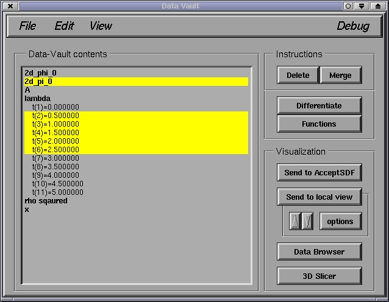
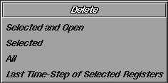
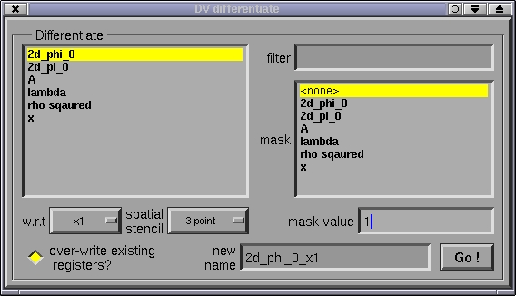
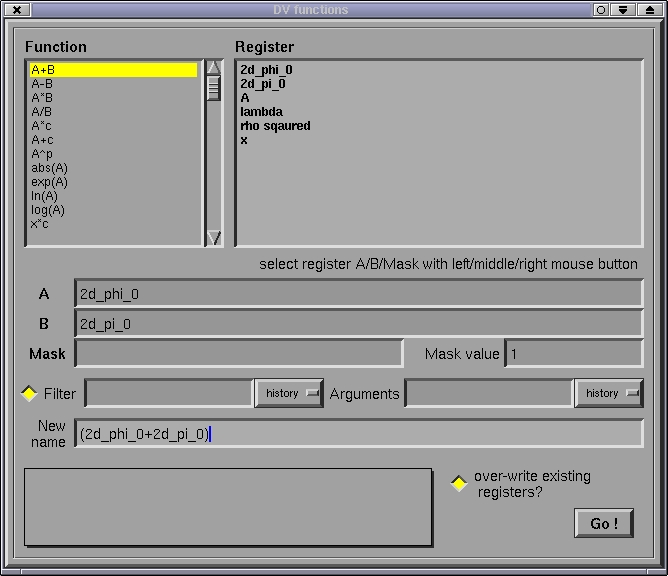

After clicking on Delete, the following sub-window should pop-up:

Clicking on Selected and Open or Selected will delete
the desired items. An "open" item is one that is visible on the DV main
window. For example, lambda's list of times are open in the
above screen shot. Double clicking on lambda will "close" the list of times,
however, any selected times will remain selected; hence the distinction
between the first 2 delete statements. Delete All will delete all
registers, regardless of which are selected. Delete Last Time-Step of
Selected Registers will delete the last time step of any registers
that are selected (this function is useful because the last time step of
an sdf file that is being produced by a program that is still running may
be incomplete due to disk buffering, and hence the last time step may contain
garbled data).
WARNING: DV requires that all grids within a given register
be unique. Here, unique means that at least one of the following
attributes must be different between any two grids within a register: time,
resolution(level) and the coordinate domain occupied by the grid. Therefore,
if you merge registers that contain identical grids (i.e. non unique as
just defined), DV will discard all but one of the identical grids.

All registers currently in the DV are shown in both the Differentiate list on the left (where one selects the register to differentiate), and the mask list on the right (where an optional "mask" register can be selected) . The w.r.t choice box is used to select which coordinate to differentiate with respect to. The default coordinate names are t for time, and x1,x2,x3 for the first three spatial coordinates. The particular finite difference stencil to use for spatial differences is specified via the spatial stencil choice box (currently only 2 second order accurate operators are provided). The current temporal difference stencil is leap-frog at interior times, and standard second order accurate forward and backward stencils applied to the first and last time of a register respectively.
The optional mask register can be used to specify an excised region where grid function values are to be interpreted as undefined. The mask register must have an identical structure compared to the register being differentiated, and the region of the computational domain that is treated as undefined are all grid locations where the mask grid function has a numerical value equal to mask value. Standard second order accurate forward and backward difference stencils are applied adjacent to excised regions, as required not to reference undefined function values.
The optional filter argument allows one to select portions of a register to operate on, and is explained in the other functions section below.
When Go! is clicked, a new register with name specified by new
name will be created containing the result of the differentiation.
If the over-write existing registers? button is not selected,
then a warning prompt will be issued if a register with the name new
name already exists.

In the function window, the desired function can be selected by clicking on the corresponding item in the Function list on the left. Most supported functions are either unary or binary: unary functions operate on register A, while binary functions operate on registers A and B. Register A(B) can be set by either typing its name into the corresponding text widget, or left(right)-clicking on it in the Register list to the right of the Function list. An optional mask register, as explained in differentiation above can also be given, and can be selected by clicking on the register name with the right mouse button in the Register list.
Certain functions take arguments. The arguments are described in the information box on the lower right portion of the window after the function is selected, and the desired arguments can be entered in the Arguments widget.
With most functions a filter can be applied to the source registers A and B, that cause the function to only operate on a portion of the registers. When the button to the left of Filter is selected, the filter, entered in the text widget to the right, is applied. The format for the filter is as follows:
t=<ivec>; l=<ivec>; [cb=x1,x2,y2,y2,... | ib=i1,i2,j1,j2,...]
<ivec> is an index vector (as used by RNPL for output control), which is a convenient notation for specifying sequences of integers. An example of an index vector is 1,3,5-10/2,15-*. Single numbers are interpreted verbatim, a term n1-n1/s denotes the sequence n1,n1+s,n1+2s,...,n2, and an asterisk denotes the last valid index of the relevant data structure. The t=<ivec> statement selects a sequence of times (1 to the number of times within a register, with 1 being the earliest time), and the l=<ivec> statement selects a sequence of levels (1 to the number of resolution-levels within a register, 1 being the coarsest level). The cb=x1,x2,y2,y2,... term specifies a coordinate bounding box, whereby all data outside of the rectangle [x1..x2,y1..y2,...] will be clipped. Similarly ib=i1,i2,j1,j2,... specifies an index bounding box, whereby each grid is clipped relative to its array shape [1..Nx,1..Ny,...]. Only one of the coordinate or index bounding box statements may be specified within a filter argument; any combination of a time index vector, a level index vector, and a bounding box statement may be specified --- multiple selections are interpreted with a logical and.
When Go! is clicked, a new register with name specified by New name will be created containing the result of the differentiation. If the over-write existing registers? button is not selected, then a warning prompt will be issued if a register with the name New name already exists.
history lists are available for many text widgets in DV, and
store a short list of the most recent entries of the corresponding text
widget. Selecting an item within the history will copy the item to the
text widget.